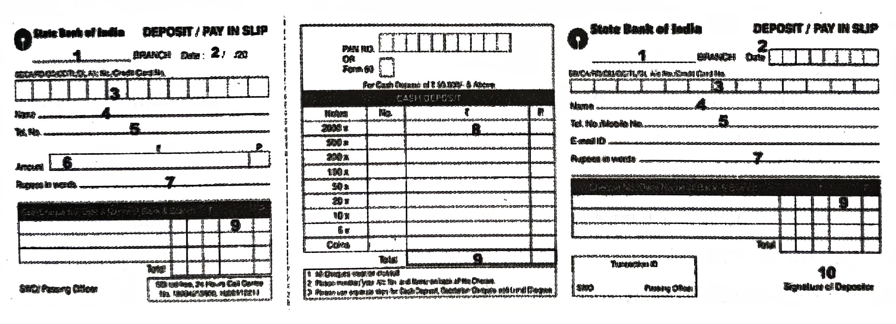

(Units 4, 8, 12, 15, 16, 20, 21 & 25)
Marks: 40
Time: 1 ½ Hrs
1. Answer ANY ONE of the following questions in about 100 words. (1 × 4 = 4)
a) Sketch the character of Jim in the light of Ma Ryan’s comments like: “It is the same –! But how did it get into Jim’s pocket?”
b) “Ma, you are talking like someone in a fog, without any sense.” Are these words from Jim an order or exception? Explain.
2. Answer ANY ONE of the following questions in about 100 words. (1 × 4 = 4)
a) How does the speaker describe Miss Pushpa in the poem?
b) Does the poem bring out the sweetness of Miss Pushpa? Justify your answer.
3. Answer ANY ONE of the following questions in about 100 words. (1 × 4 = 4)
a) The narrator thought that his interview was superfluous. Why?
b) Why do you think the old man visited the waiting room?
4. Read the following passage and answer ANY FIVE questions given below: (5 × 1 = 5)
I asked for the office of the Dean, Dr. Lionel Loftus, F.R.C.P. A porter showed me into a small bare waiting room decorated only by framed black-and-white pictures of past deans, which ran along the walls like a row of dirty tiles. As there were no chairs, I sat on the edge of the dark polished table and swung my legs. The surroundings and a week of my father’s coaching had made me depressed and nervous. My mind was filled with the awkward questions that Dr. Loftus was even then contemplating asking me, and I found to my surprise I would give no satisfactory replies to any of them. I wondered what I should say if he simply asked me why I wanted to be a doctor. The answer was, I suppose, that neither my parents nor myself had the originality to think of anything else, but this didn’t seem a suggestion likely to help me into the medical school.
i) What was the narrator looking for?
ii) How was the room?
iii) “...a row of dirty tiles.” What are those tiles?
iv) Why was Richard nervous?
v) Pick out the word which means thinking about.
vi) Pick out the phrase that means causing inconvenience.
vii) What was the unanswerable question that Richard expected from the Dean?
viii) Why was Richard not sure of his admission into the medical school?
5. Read the following passage and answer ANY FIVE questions given below: (5 × 1 = 5)
Bird Lover of a Rare Kind
Penumaka Malakshmi (a man, please) of Kadium in East Godavari district is a daily wage earner from a downtrodden community. Yet, he has been feeding thousands of birds regularly for over six decades. He is now seventy-two and his service continues. He collects sheafs of paddy from farmers during the harvest time. He stores those paddy bundles in a nearby temple. Every evening, he picks up some ears of paddy (380) and weaves them into ornamental tassels and hangs them from buildings. Birds in flocks feed on them joyously. On New Year Days, he erects an arch near the temple and hangs some beautifully woven tassels from it. Thousands of chirping birds picking grains from that ornamental arch is a sight to behold! This rare act of real charity has seen the light of day as a national best teacher awardee, Mr. Chilukuri Srinivasa Rao (himself a lover of dogs and plants – feeds hundreds of stray dogs every day and planted over one lakh saplings so far!) has written about Malakshmi in Prajasakthi (January, 2021).
i) How does Penumaka Malakshmi make his living?
ii) How does Malakshmi find means to feed hundreds of birds every day?
iii) What is his art that attracts people’s attention towards his charity?
iv) How has Malakshmi’s rare act of charity come to light?
v) Write the idiom used in the passage to mean become publicly known.
vi) Write the word used in the passage that forms a set of homophones with site / cite.
vii) Find out the synonym from the passage of see.
viii) Put stress mark on the right syllable of the word community.
6. You are Ch. Krishna. Your Account number is 56218561932. Deposit an amount of Rs. 9,300/- into your Savings Bank Account with the SBI, Punjagutta Branch. Your mobile number is 8374373612. The amount is in the denomination of Rs. 500 notes 18 and the remaining are Rs. 100 notes. (10 × ½ = 5)
State Bank of India

1) ____________________________
2) ____________________________
3) ____________________________
4) ____________________________
5) ____________________________
6) ____________________________
7) ____________________________
8) ____________________________
9) ____________________________
10) ____________________________
7. Prepare a curriculum vitae in response to the following advertisement in a newspaper. (5 × 1 = 5)
8. Write a dialogue between two friends on the choice of their career. (1 × 5 = 5)
OR
Build a dialogue between a customer and a salesman who has sold a defective item.
9. Mark the stress for FOUR of the following words. (4 × 1 = 4)
i) common
ii) adopt
iii) humility
iv) footprint
v) understand
vi) among